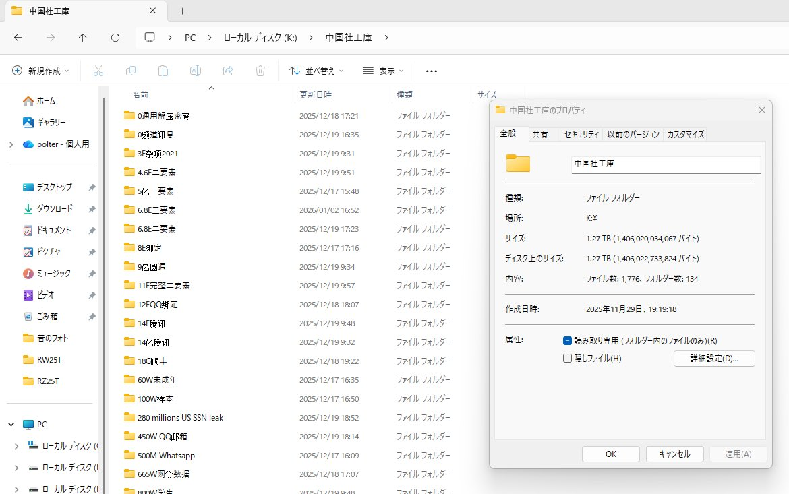

RT @SakunaiHinata: 我有意願無償向台灣政府的國家安全政府機關提供以下超過1.2TB的中國社工庫資料檔案，裡面有很多中國國民個資及中國共產黨黨員資訊，希望這些資料能夠幫助台灣政府更好反中國間諜
這裡沒有公開任何個人私隱及敏感資訊的打算，只做台灣的國家公益用途，…

這裡沒有公開任何個人私隱及敏感資訊的打算，只做台灣的國家公益用途，…

我有意願無償向台灣政府的國家安全政府機關提供以下超過1.2TB的中國社工庫資料檔案，裡面有很多中國國民個資及中國共產黨黨員資訊，希望這些資料能夠幫助台灣政府更好反中國間諜
這裡沒有公開任何個人私隱及敏感資訊的打算，只做台灣的國家公益用途，這些資料我有打算提供給未來的日本國家情報局 https://t.co/EOnpBUYDVM
這裡沒有公開任何個人私隱及敏感資訊的打算，只做台灣的國家公益用途，這些資料我有打算提供給未來的日本國家情報局 https://t.co/EOnpBUYDVM